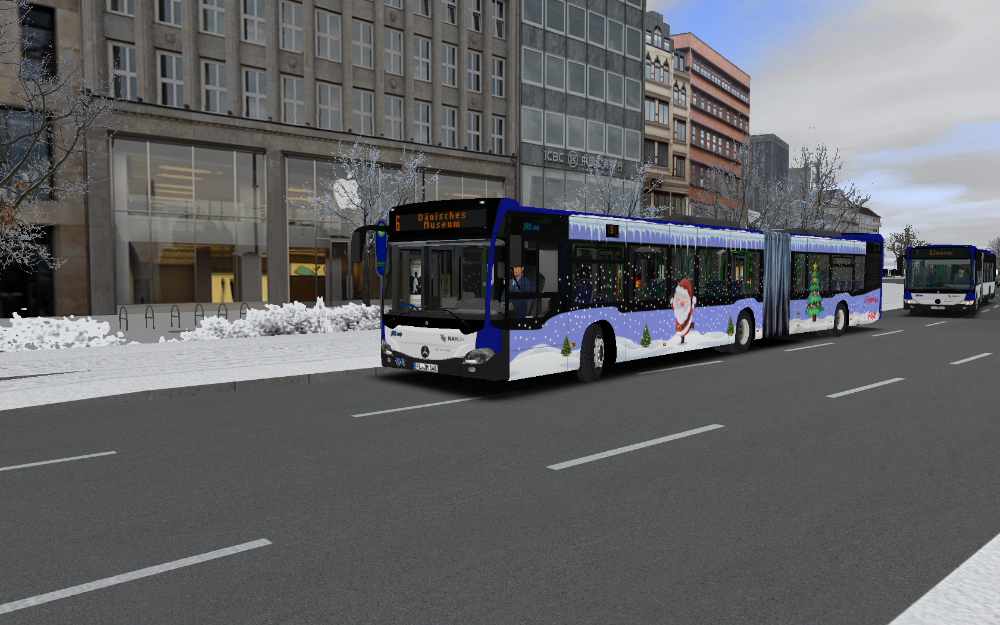
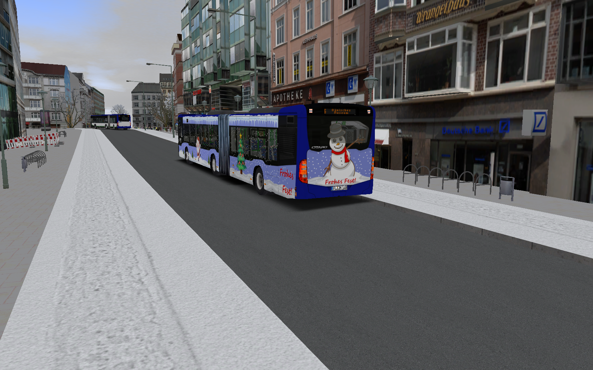
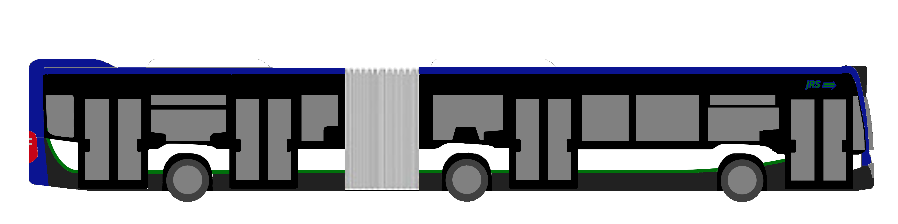
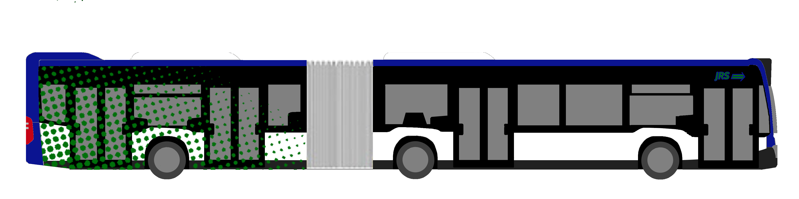

NEWS:
25.01.2024 15:27
Neufahrzeuge:
Alternative Antriebstechniken sind auch bei uns ein Thema. So kam es, dass wir beim polnischen Bushersteller Solaris 5 Urbino 18 IV Hydrogen bestellt haben. Diese wurden letzte Woche ausgeliefert und der ein oder andere dürfte diese schon auf den Linien 4 und 5 angetroffen haben. Neu ist das Infotainment, welches genau auf unsere Bestimmungen ausgerichtet ist. Unser Kooperationspartner MM GmbH setzt ebenfalls auf alternative Antriebstechniken. Diese ergänzen den Verkehr auf der Linie 8 mit Solaris Urbino 18 IV electric.
.png)
.png)
.png)
07.12.2024 11:13
Neues Werbefahrzeug:
Ab sofort ist Wagen 149 mit einer Werbung für Bauhaus unterwegs:
.png)
.png)
24.11.2024 13:12
Weihnachtliche Beklebung:
Es weihnachtet sehr. Das gilt auch für Lindenhagen und unter diesem Motto wurde Wagen 148 weihnachtlich beklebt. Inspiriert wurden wir hier von Üstra , welche jedes Jahr eine Stadtbahn und einen (regio)Bus weihnachtlich gestalten lässt.


Hier zeigt sich der Citaro 2 Gelenkbus in seinem weihnachtlichen Gewand an der Haltestelle "Dammstraße". Die Haltestelle Dammstraße ist neben "Unterer Stadtmarkt" eine der Haltestellen, an der alle Stadtbuslinien halten. Unter anderem die Linie 6 zum dänischen Museum. Im Hintergrund ist Wagen 114 abfahrtsbereit, um auf der Linie 7 in den Stadtteil Elmsrup zu fahren.
Kleine Randnotiz: In zwei Wochen beginnt die Adventszeit, was bedeutet, dass wieder historische Busse im Stadtverkehr zum Einsatz kommen werden. Dieses Jahr ist auch wieder etwas "neues" altes dabei! ;)
12.11.2024 14:51
Erstes Fahrzeug in neuem Design unterwegs:
Nach paar Wochen ist es endlich soweit: Die ersten Fahrzeuge sind umlackiert und werden nun im Stadtverkehr eingesetzt. Die Prämiere hatte Wagen 141, ein Mercedes-Benz Citaro der 2. Generation. Erst im Februar diesen Jahres ausgeliefert, sind nun die Citaros die ersten, welche im neuen Design fahren werden:
.png)
.png)
Hier befindet sich Wagen 141 am Marktplatz kurz vor der Haltestelle "Unterer Stadtmarkt".
25.10.2024 13:35
Fahrzeuge bekommen nun ein neues Design:
Schon sehr lange fahren die Schwarz-Grün-Blauen Fahrzeuge durch Lindenhagen und haben das dortige Stadtbild sehr geprägt. Das Design wirkt oft trüb und schlicht. So ist es nach über 30 Jahren Zeit für ein neues Design. Auf unserer Instagramseite konnte man vor kurzem zwischen zwei neuen Designvorschlägen abstimmen. Ziel war es, dem trüben und schlichten Design entgegen zu wirken. Dabei hat sich folgendes Design durchgesetzt:

Wie man sieht, sind die typischen Farben erhalten geblieben und das Design wirkt deutlich freundlicher. Außerdem ist mehr weiß enthalten, was generell angenehmer für das Auge ist. Das zweite Design sah folgendermaßen aus:

Hier ist weniger grau enthalten. Auffällig sind hier die grünen Punkte am Heck des Fahrzeugs. Das lässt sich auch häufiger beobachten, bietet aber nicht so günstige Umstände für Fahrzeugwerbung.
Das neue Design wird nach und nach angewendet, zumindest auf die Fahrzeuge des täglichen Ensatzes. Die historischen Fahrzeuge, sowie die für den SEV und Ersatzverkehr bleiben im alten Design.
22.10.2024 13:04
Bahnhof wieder erreichbar:
Der Verkehrsunfall von heute morgen (wir berichteten bereits) ist bereinigt und die Haltestelle Sondertoft wird bedient. Bis der Verkehr wieder wie gewohnt läuft, könnte es noch etwas dauern. Für genaue Informationen bitte die Anzeigetafeln beachten, oder in der "Mein Lindenhagen"-App nachschauen.
22.10.2024 11:45
Einschränkungen zwischen Bahnhof und ZOB:
Aufgrund eines Verkehrsunfalls zwischen Sondertoft und Bahnhof fährt die Linie 1 nur bis ZOB. Der Bahnhof kann über die Linien 5 und 8 ab ZOB über Blankenwik bzw Buchenlund erreicht werden. Sollte die Strecke wieder befahrbar sein, erfahren sie dies hier, oder über die "Mein Lindenhagen"-App.